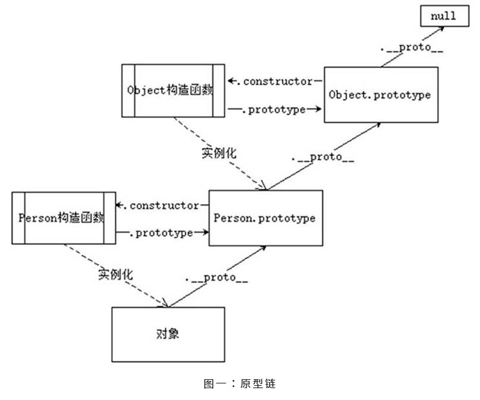
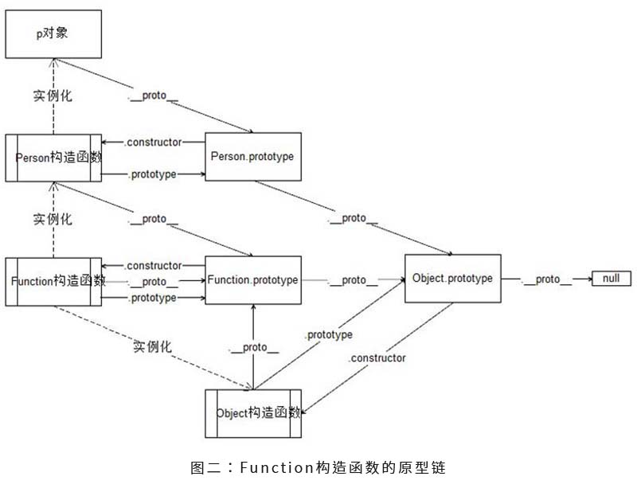

WEB前端助手（FeHelper）
JavaScript工具库Lodash
面向对象
面向过程
面向对象编程的三大特性
数据类型
对象动态特性的使用方式
objName.attrName = value;objName["attrName "] = value;值类型数据与引用型数据间的运算
当值类型的数据与引用类型的数据进行运算（算数运算，关系运算）的时候，会遵循如下规则：
首先会调用引用类型数据的valueOf方法，获取返回值，尝试和值类型的数据进行运算， 如果可以计算，就得出结果。
如果不能计算，再继续调用这个引用类型数据的toString方法，获取返回值，进行计算！
xxxxxxxxxxconsole.log({} + 1); // [object Object]1//1. {}.valueOf() + 1//2. {}.toString() + 1//3. "[object Object]" + 1//4. "[object Object]1"console.log([] + 1); // 1//1. [].valueOf() + 1//2. [].toString() + 1//3. "" + 1//4. "1"console.log({} == !{}); // false//1. {} == false//2. {}.valueOf() == false//3. {}.toString() == false//4. "[object Object]" == falseconsole.log([] == ![]); // true//1. [] == false//2. [].valueOf() == false//3. [].toString() == false//4. "" == falseURL地址格式
开启严格模式
"use strict"字符串(可用单引号)对象的浅拷贝和深拷贝
浅拷贝：将对象中的属性复制一份交给新的对象，不考虑对象中的引用类型的属性
xxxxxxxxxxfor(var key in oldObj){ newObj[key] = oldObj[key];}var newObj = Object.assign({},oldObj);深拷贝：将对象中的属性复制一份交给新的对象，如果属性是引用类型的值，那么也要将该引用类型的属性拷贝一份。最终达到的效果，就是拷贝出来的对象和原来的对象没有一点点关系，两者互不影响！(risky.love)
xxxxxxxxxxfor(var key in oldObj){ if(typeof oldObj[key] == "object"){ var temp = {}; for(var i in oldObj[key]){ temp[i] = oldObj[key][i]; } newObj[key] = temp; } else { newObj[key] = oldObj[key]; }}// 利用递归实现深拷贝function deepCopy(obj){ var result = {}; for(var k in obj){ if(typeof obj[k] == "object"){ result[k] = deepCopy(obj[k]); }else{ result[k] = obj[k]; } } return result;}var newObj = deepCopy(obj);构造函数
构造函数也是一个函数，它是用来初始化对象的。
构造函数的特点:
构造函数的执行过程：
构造函数的注意事项：
构造函数不需要自己写 return 语句，如果写了：
1.1 如果 return 的是值类型的数据，不会对构造函数的默认返回值产生影响
1.2 如果 return 的是引用类型的数据，那么构造函数最终返回的将是 return 中的内容
构造函数如果被当做普通函数来调用的话，里面的 this 会指向 window 对象，添加的所有属性和方法，都将添加到 window 中去，当做普通函数调用的时候，返回值的内容，和普通函数一样，有return就是return的内容，没有就是undefined
传统构造函数存在的问题：
原型
构造函数在被创建出来的时候，系统会自动的帮构造函数创建并且关联一个空的对象，这个空对象就是原型。
原型的作用：
如何访问原型：
构造函数.prototype对象.__proto__（不是一个标准的属性，存在兼容问题，不能在实际开发中使用）constructor属性
构造函数.prototype重新赋值一个新的对象的时候，系统不会自动的为这个新的对象添加constructor属性，一般情况下，我们会自己手动的在新对象中添加一个constructor属性（这个操作不是必须的）原型的使用方式：
原型的使用注意事项：
object.attribute或者object["attribute"]为属性赋值的时候，并不会去原型中找对应的属性，只会在对象自身进行查找，如果对象自身有这个属性，那么就修改，如果对象自身没有这个属性，就会帮对象添加一个该属性原型链
js中所有的对象都有原型（.__proto__），原型也是一个对象；原型对象也有自己的原型（.__proto__）,这样就形成了一个由原型组成的链式结构，称为原型链。
属性搜索原则：
当使用对象访问一个属性或者方法的时候，会遵循如下原则：

Object.prototype成员（对象的属性和方法）
object2.__proto__ === object1)Object.defineProperty()
该方法会直接在一个对象上定义一个新属性，或者修改一个对象的现有属性， 并返回这个对象。
x
`Object.defineProperty(obj, prop, descriptor)`// obj: 要在其上定义属性的对象// prop: 要定义或修改的属性的名称`descriptor: 将被定义或修改的属性描述符, 描述符必须是以下两种形式之一, 不能同时是两者` // 数据描述符: 一个具有值的属性 // 存取描述符(访问器描述符): 由getter-setter函数对描述的属性// 返回值: 被传递给函数的对象1. 数据描述符和存取描述符均具有以下可选键值
writable特性外的其他特性是否可以被修改。for...in 循环和 Object.keys() 中被枚举。默认为 false。2. 数据描述符同时具有以下可选键值
3. 存取描述符同时具有以下可选键值
undefined。该方法返回值被用作属性值。undefined。该方法将接受唯一参数，并将该参数的新值分配给该属性。Example
xxxxxxxxxxlet obj = {};Object.defineProperty(obj, "name", { // writable: true, // configurable: true, // enumerable: true, // value: 'kingmui' get: function(){ // get方法会在别人获取当前对象的这个属性值的时候被调用 // 获取到的值，其实就是get方法的返回值 console.log('你获取了我的属性'); return this._name; }, set: function(value){ // set方法会在别人为当前对象的这个属性赋值的时候被调用 // value这个形参接收到的内容，就是赋值的时候等号右边的内容 console.log('你给我的属性赋值了'); console.log(value); this._name = value; }});沙箱模式
沙箱模式其实就是一个自调用函数。沙箱的作用，就是对代码起到保护，隔离的作用。
xxxxxxxxxx(function(window){ // 最上面写变量的声明 function Fn(){ // 功能的实现 } //将Fn暴露到沙箱外面 window.Fn = Fn;})(window);var fn = new Fn();//传参的必要性： //如果在沙箱中使用到沙箱外部的内容，那么就需要将内容以传参的形式传递到沙箱中进行使用 //原因：1. 可以实现逻辑上的隔离；2. 有利于代码压缩继承的实现方式
在其他语言中继承关系是基于类的，而在JS中继承关系是基于对象的。
混入式继承
xxxxxxxxxxvar obj1 = {};var obj2 = { name: "Coco", age: 18}for(var key in obj2){ obj1[key] = obj2[key];}原型式继承 2.1 利用混入式给原型添加属性和方法
xxxxxxxxxxvar obj1 = { name: "Coco", age: 18}var obj2 = { gender: "male", hobby: "playGames"}function Person(){}//将需要继承的对象中所有的内容，通过 for...in循环的方式加到构造函数的原型中for(var key in obj1){ Person.prototype[key] = obj1[key];}for(var key in obj2){ Person.prototype[key] = obj2[key];}2.2 直接将要继承的对象作为构造函数的prototype属性
xxxxxxxxxxvar obj = { name: "张三", age: 18}function Person(){}Person.prototype = obj;2.3 经典继承的兼容性封装代码
Object.create()（ECMA5之后才有的方法），就能创建出来一个新的对象，创建出来的这个新对象，就会以原型继承的方式继承自参数传入的对象 xxxxxxxxxx// 参数obj表示想要继承的对象；返回值是继承自obj的新对象function myCreate(obj){ if(Object.create){ return Object.create(obj); }else{ function F(){} F.prototype = obj; return new F(); }}2.4 安全地扩展内置对象
xxxxxxxxxxfunction MyNameArray(){}MyNameArray.prototype = [];MyNameArray.prototype.fn = function(){ // statement}var arr = new MyNameArray();arr.fn();自调用函数
Immediately-Invoked Function Expression (IIFE) 立即执行函数表达式
xxxxxxxxxx// 写法1（常用）(function(){ // statement;})(); // 只有函数表达式才可以加上小括号直接调用// 写法2(function(){}());// 写法3（罕见）+ function(){}();- function(){}();! function(){}();~ function(){}();// -------------------注 意------------------document.onkeydown = function(){ alert("按键事件被触发了");}; // 该处的封号(;)不可省略，否则将出现如[省略封号出现的问题]所示的问题(function(){ alert("这是立即执行函数表达式中的内容");})();// 省略封号出现的问题document.onkeydown = function(){ alert("按键事件被触发了");}(/* 该括号将自调用按键事件，并将括号中的函数作为参数传入按键事件的函数 */function(){ alert("这是立即执行函数表达式中的内容");})();伪数组
上下文调用模式
在现实开发中，如果想要实现修改this指向特定的对象，就得使用上下文调用模式。
call()方法
语法：函数名.call(对象, arg1, arg2, arg3...argN)
实现的功能：
该方法的作用和 apply() 方法类似，只有一个区别，就是 call() 方法接受的是若干个参数的列表，而 apply() 方法接受的是一个包含多个参数的数组。
xxxxxxxxxx// 上下文调用模式的应用 --- 利用call方法实现obj2共享obj1的方法var obj1 = { name : "张三", age : 18, work : function(){ console.log("我是" + this.name + "正在工作！"); }}var obj2 = { name : "李四", age : 18,}obj1.work.call(obj2); // 李四正在工作！// 用伪数组借用数组的方法var fakeArr = { 0: "faker", 1: "hacker", 2: "cracker", 3: "blacker", length: 4};[].push.call(fakeArr, "什么东西");Array.prototype.push.call(fakeArr, "又是什么东西"); // 跟上句代码实现相同的功能console.log(Array.prototype.slice.call(fakeArr, 1, 3);); // "hacker", "cracker"apply()方法
语法：函数名.apply(对象, 数组或者伪数组)
实现的功能：
xxxxxxxxxx// 使用apply来实现将伪数组转换成真数组var realArr = [];realArr.push.apply(realArr, fakeArr);// 伪数组转真数组的终极方案（最受欢迎的方案）var realArr = Array.prototype.slice.call(fakeArr);注意事项
bind()方法
用当前函数生成一个新的函数，函数中的this，绑定为bind方法传入的第一个参数，以后这个函数，无论以哪种调用方式来调用，那么他里面的this，都是一开始绑定好的值
xxxxxxxxxxfunction test(){ console.log(this);}var func = test.bind(window);func(); // windowvar obj = { func: func}obj.func(); // window//下列代码将函数中的this永远绑定成了{length: 123}，所以无论func如何调用，对this都不会有任何的影响var func = function(){ console.log(this.length);}.bind({length: 123});var length = 456;var obj = { test: function() { arguments[0](); }}obj.test(func); // 123函数对象常见的属性
如果在函数表达式中写了函数名，这个函数名，是不可以在函数外面使用的，只能在这个函数体中使用
xxxxxxxxxxvar test = function func(){ // 实际开发中不会给函数表达式添加函数名 console.log(func); // 可以使用}console.log(func); // 不可以使用常见属性
2.1 name : 函数名
2.2 length : 函数的形参的个数（arguments.length 函数的实参的个数）
2.3 arguments属性
函数.arguments和函数中的arguments对象作用完全一致，但是他俩不是同一个对象2.4 caller属性
函数的原型链
函数也是对象
函数的构造函数是Function
绘制完整的原型链

静态成员和实例成员
JS的构造函数（在别的后台语言上叫做类）上可以添加一些成员，可以在构造函数内部的this上添加，可以在构造函数本身上添加，通过这两种方式添加的成员，就分别称为实例成员和静态成员。
静态成员
实例成员
作用域
变量起作用的范围。在JS中只有函数能够创建作用域。
块级作用域：使用代码块限定的作用域就是块级作用域，JS中没有块级作用域。
词法作用域（静态作用域），变量的作用域，只由变量声明的位置来决定，跟代码的运行没有关系。JS中的作用域就是词法作用域。
作用域链：函数可以创建作用域，函数中又可以声明函数，那么就会形成作用域嵌套作用域的一条链式的访问结构，称为作用域链。
变量的搜索原则
闭包
闭包就是能够读取其他函数内部变量的函数， 由于在 JavaScript 语言中，只有函数内部的子函数才能读取局部变量， 因此可以把闭包简单理解成 “定义在一个函数内部的函数”。 所以，在本质上，闭包就是将函数内部和函数外部连接起来的一座桥梁。
闭包的作用：
闭包最基本的模式
xxxxxxxxxxfunction outer(){ // outer中声明的data变量无法直接在outer外面使用 var data = ""; // 声明一个函数inner，由于是在outer中声明的，所以可以对data变量进行任何操作 function inner(){ // 可以操作data } // 将函数inner返回到outer外面去，就可以实现在外部使用inner来间接地操作data return inner;}var f = outer();使用闭包设置并且获取数据
xxxxxxxxxxfunction outer(){ var data = ""; return { getData: function(){ return data; }, setData: function(value){ data = value; } }}正则表达式
正则表达式：用于匹配规律规则的表达式。
元字符
| 元字符 | 说明 |
|---|---|
| \d | 匹配数字 |
| \D | 匹配任意非数字的字符 |
| \w | 匹配字母或数字或下划线 |
| \W | 匹配任意不是字母，数字，下划线 |
| \s | 匹配任意的空白符 |
| \S | 匹配任意不是空白符的字符 |
| . | 查找单个字符，除了换行和行结束符 |
| ^ | 表示匹配行首的文本(以谁开始) |
| $ | 表示匹配行尾的文本(以谁结束) |
| \b | 匹配单词边界 |
| \B | 匹配非单词边界 |
| \n | 查找换行符 |
| \f | 查找换页符 |
| \r | 查找回车符 |
| \t | 查找制表符 |
| \v | 查找垂直制表符 |
限定符
| 限定符 | 说明 |
|---|---|
| * | 重复零次或更多次 |
| + | 重复一次或更多次 |
| ? | 重复零次或一次 |
| {n} | 重复n次 |
| {n,} | 重复n次或更多次 |
| {n,m} | 重复n到m次 |
其他
| 符号 | 说明 |
|---|---|
| [] | 查找方括号之间的任何字符 |
| [^] | 查找任何不在方括号之间的字符 |
| \ | 转义符 |
| | | 或者，选择两者中的一个。注意|将左右两边分为两部分，而不管左右两边有多长多乱 |
| (red|blue|green) | 查找任何指定的选项。 eg：gr(a|e)y 匹配gray和grey |
| [\u4e00-\u9fa5] | 匹配汉字 |
创建正则对象
字面量方式
xxxxxxxxxx// 字面量语法：/pattern/attributes// 参数 pattern 是一个字符串，指定了正则表达式的模式或其他正则表达式。// 参数 attributes 是一个可选的字符串，包含属性 "g"、"i" 和 "m"，分别用于指定全局匹配、区分大小写的匹配和多行匹配。var reg = /\d/i;var reg = /\d/gi;构造函数方式
xxxxxxxxxx// 构造函数语法：new RegExp(pattern, attributes);// 可以向 RegExp 对象添加第二个参数，以设定检索。例如，如果需要找到所有某个字符的所有存在，则可以使用 "g" 参数 ("global")。var reg = new RegExp("\d", "i");var reg = new RegExp("\d", "gi");参数
| 标志 | 说明 |
|---|---|
| i | 忽略大小写 |
| g | 全局匹配 |
| gi | 全局匹配+忽略大小写 |
正则匹配
test()方法：正则表达式.test(要被验证的字符串) test() 方法检索字符串中的指定值。返回值是 true 或 false。
xxxxxxxxxxvar dateStr = '2015-10-10';var reg = /^\d{4}-\d{1,2}-\d{1,2}$/console.log(reg.test(dateStr)); // trueexec()方法：正则表达式.exec(要被验证的字符串) exec() 方法检索字符串中的指定值。返回值是被找到的值。如果没有发现匹配，则返回 null。
xxxxxxxxxxvar reg = new RegExp("e");console.log(reg.exec("The best things in life are free")); // ecompile()方法：正则表达式.compile(改变后的正则表达式) compile() 方法用于改变 RegExp。compile() 既可以改变检索模式，也可以添加或删除第二个参数。
xxxxxxxxxxvar reg = new RegExp("e");console.log(reg.test("The best things in life are free")); // true// 将正则表达式由e 改成 dreg.compile("d");console.log(reg.test("The best things in life are free")); // false正则提取
语法：字符串.match(正则表达式) 匹配到的结果用RegExp.$1 $2 $3...来获取
xxxxxxxxxx// 分组提取var dateStr = '2017-08-30';// 正则表达式中的()作为分组来使用，获取分组匹配到的结果用RegExp.$1 $2 $3...来获取var reg = /((\d{4})-(\d{1,2}))-(\d{1,2})/;var matches = dateStr.match(reg);// 正则表达式匹配到的字符串整体内容为数组的第一个元素// 正则表达式中的小括号, 按照从左往右的顺序，将每个小括号中的内容作为数组依次往后的元素console.log(matches); // ["2017-08-30", "2017-08", "2017", "08", "30"]console.log(RegExp.$1); // 2017-08 $1取出来的就是第一组console.log(RegExp.$2); // 2017console.log(RegExp.$3); // 08console.log(RegExp.$4); // 30正则替换
语法：字符串.replace(正则表达式,参数) 表示在这个字符串中所有满足该正则表达式规则的内容，替换成replace方法第二个参数的内容。
xxxxxxxxxx// 字符串的replace方法的第一个参数可以是一个正则表达式// 替换所有,|，var str = "abc,efg,123，abc,123，a";str = str.replace(/,|，/g, ".");console.log(str); // abc.efg.123.abc.123.a